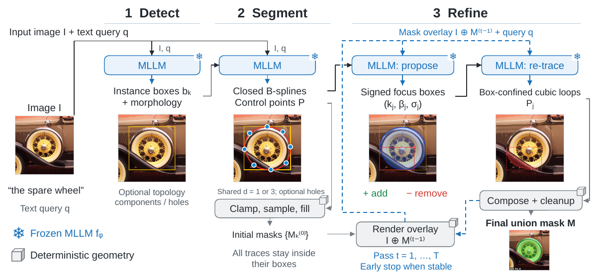
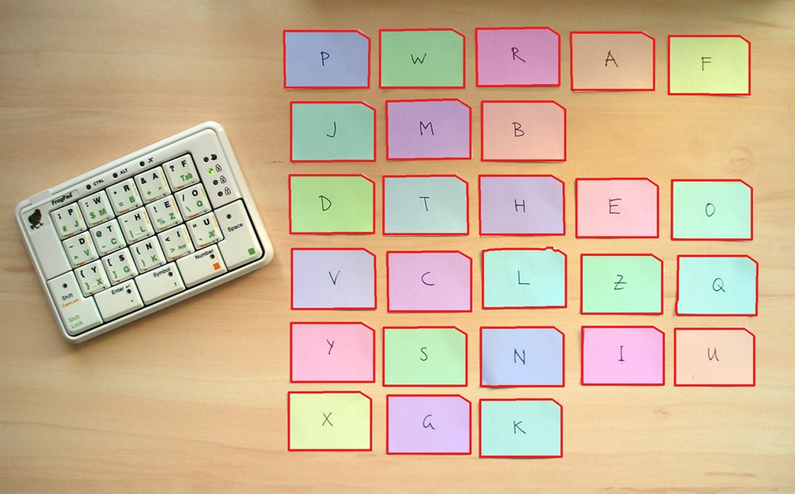
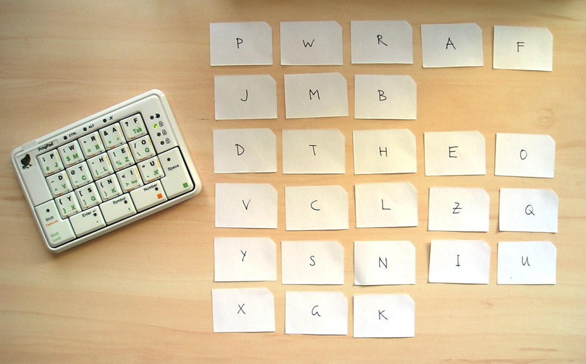
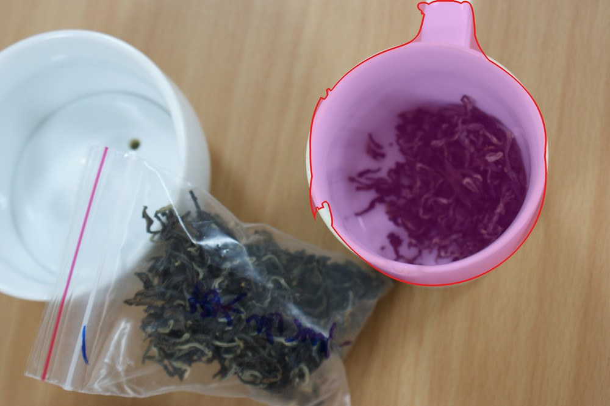
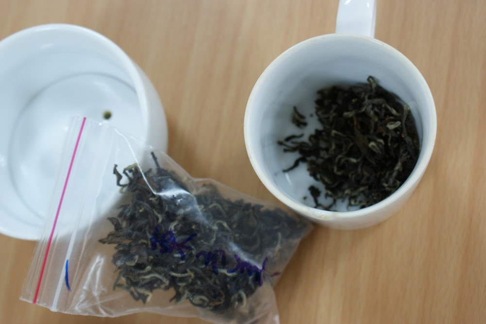

Promptable segmentation models such as SAM 3 achieve remarkable open-vocabulary performance but require dedicated architectures, large-scale annotation engines, and task-specific training. We ask a different question: can a general-purpose multimodal large language model (MLLM) segment images directly, without an added segmentation head, mask decoder, or training? We present LLMSeg, a training-free pipeline that turns a vision-capable LLM into a text-prompted image segmenter. LLMSeg decomposes segmentation into three LLM-driven stages. First, detect localizes all instances matching a free-form text query and describes their coarse morphology. Next, segment traces each instance using closed periodic B-splines confined to its detected box. These splines define an outer boundary and optional hole loops. Finally, refine iteratively proposes focus boxes around residual errors and retraces confined splines. The process ends when the mask stabilizes or the pass budget is exhausted. The output is a binary mask with inspectable intermediate geometry.
We evaluate LLMSeg across ten referring and reasoning segmentation splits (ReasonSeg and RefCOCO/+/g). We also evaluate open-vocabulary instance segmentation (LVIS, COCO, and SA-Co), semantic segmentation, and zero-shot detection (ODinW13 and RF-100VL). With an off-the-shelf Gemini-3.7-Flash backend, LLMSeg is competitive with and often surpasses the specialist SAM 3 model on identical items. It reaches 69.6 gIoU (71.5 cIoU) on ReasonSeg val without additional segmentation-specific training. Backend model updates can improve accuracy without retraining the pipeline.

Image and text query go in. Out come N instance boxes with a short morphology note for each, in reading order. Near-duplicate boxes are dropped.
One call returns a closed periodic B-spline outline per instance (plus optional hole loops). Control points are clamped to the instance box, then the curve is sampled and filled into a mask.
The overlay of the current mask goes back to the model, which proposes signed focus boxes (add or remove). One batched call retraces splines for all of them. Repeats for up to T passes and stops early once the mask stops moving.
Every control point and every sampled curve point is clamped to its box, so a mask can never leave its instance box.
Outlines are compact, smooth and inspectable. Holes are carved back out, and per-instance masks are united into the final mask.
Each instance carries a signed commitment field next to its mask, so successive refinement passes cannot simply undo each other.
One call each for detect and segment, at most two per refinement pass. With the default T = 8 that is at most 18 calls per image, usually far fewer thanks to early stopping.
LLMSeg with Gemini-3.7-Flash (T = 8) against SAM 3 on identical items. Best score per metric is shown in bold green. Full tables, baselines and ablations are in the paper.
| Benchmark | Metric | LLMSeg (w/o refine) | LLMSeg | SAM 3 (same items) |
|---|
LLMSeg is ahead on ReasonSeg, RefCOCO/+/g, ADE20K, ODinW13 and RF-100VL and on LVIS/COCO cgF1. SAM 3 remains ahead on SA-Co/Gold, Cityscapes, and LVIS/COCO box and mask AP.
Each row is one item with its query. The chip on each prediction is that prediction's IoU with the ground truth. SAM-3 Agent is an MLLM driving SAM 3 as a tool.
ReasonSeg items segmented by LLMSeg with Gemini-3.7-Flash. The same model reads the query and segments, with no agent wrapper or query rewriting. Drag the slider to compare the input with the result.


“In an educational setting, children often use different materials to learn about letters, numbers, and words. What object in the picture could be used as a visual aid for learning about letters and words?”


“The general steps for brewing tea are to put tea leaves into a teacup and then pour hot water over them. What container in the picture is most likely to be used next for pouring hot water to make tea?”
“the places where the driver can observe the speed”
SAM 3: Segment Anything with Concepts, the specialist baseline we compare against
LISA and ReasonSeg: reasoning segmentation via large language model
LVIS, COCO, ADE20K, Cityscapes
@article{hamdi2026llmseg,
title = {LLMSeg: Training-Free Text-Prompted Image Segmentation with B-Splines},
author = {Hamdi, Abdullah},
journal = {arXiv preprint},
year = {2026}
}We evaluate on ReasonSeg, RefCOCO/+/g, SA-Co, LVIS, COCO, ADE20K, Cityscapes, ODinW and RF-100VL, and follow the image evaluation suite of SAM 3. None of the datasets is redistributed here, so please respect each dataset's license. We thank the authors of these benchmarks for making them available.